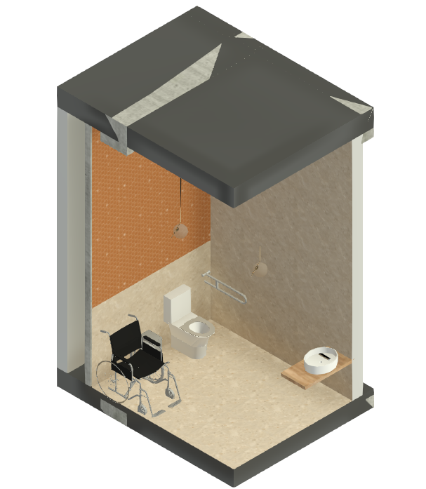

Visualización Arquitectónica 3D
Renders en Alta Resolución: Baño PMR
Modelos isométricos detallados que muestran el mobiliario ergonómico, espacio de maniobra reglamentario y dos alternativas de acabado en muros.
Propuesta Principal • Isometría 3D
Módulo PMR con Madera Roble & Cerámica Verde Oliva
Acabados biofílicos con luminarias colgantes esféricas y pisos en porcelanato granito beige.
Norma PMR 100%

Espacio de Transferencia
Espacio lateral amplio para posicionamiento de la silla de ruedas y traslado directo al inodoro con barra de apoyo.
Lavamanos Suspendido
Mesón suspendido sin faldón inferior para permitir la entrada de las piernas del usuario en silla de ruedas.
Iluminación Cálida y Sensor
Luminarias colgantes de diseño difuso y reflectores empotrados para confort visual sin sombras duras.
Propuesta Alternativa • Isometría 3D
Módulo PMR con Revestimiento Hexagonal Terracota
Mosaico vitrificado brillante tono caramelo/terracota con juntas blancas en muro de acento.
Variante de Material
